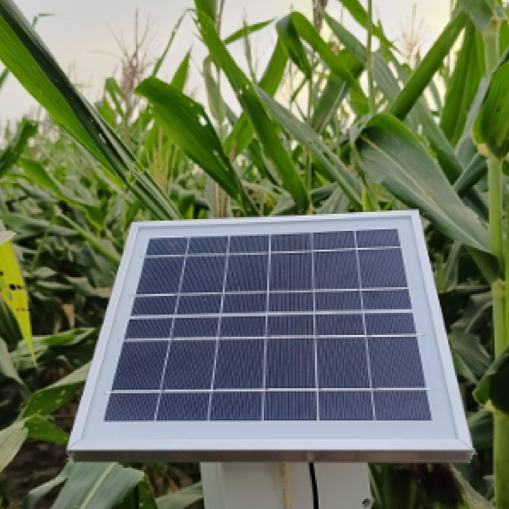
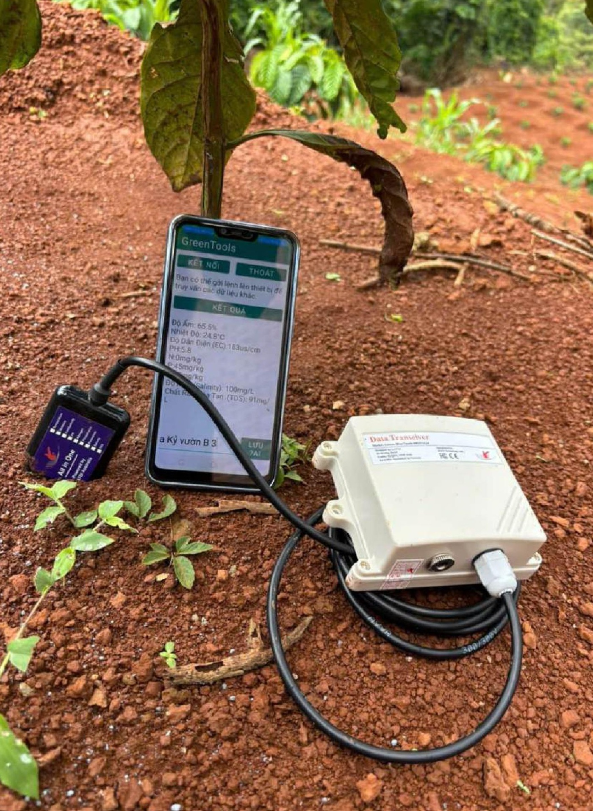
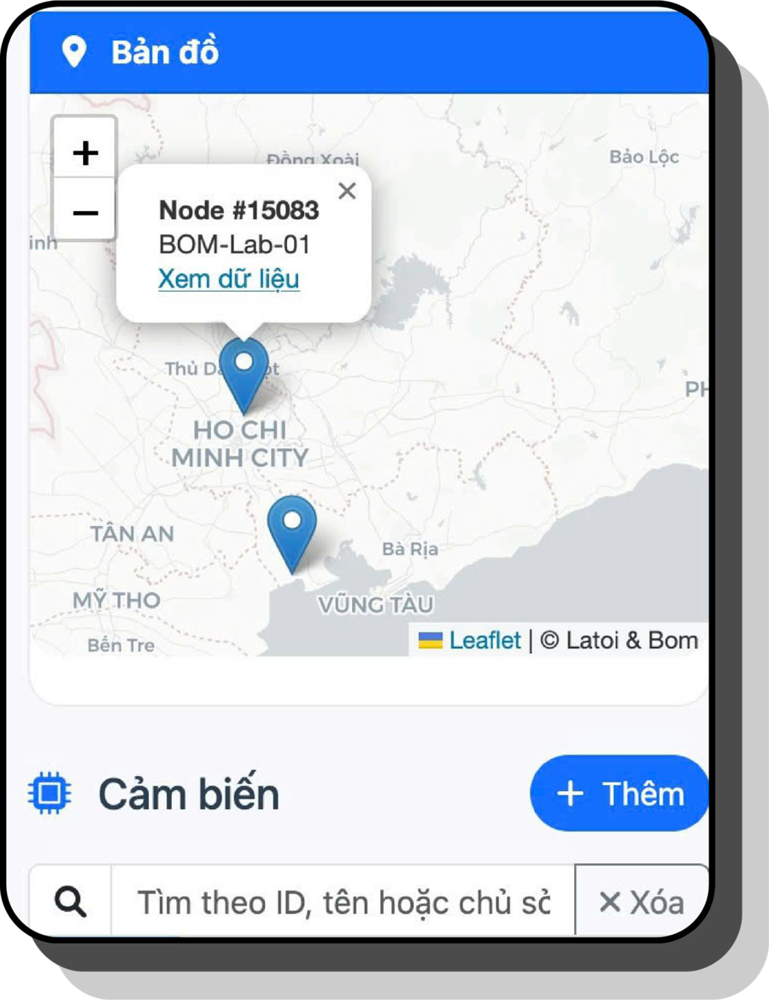
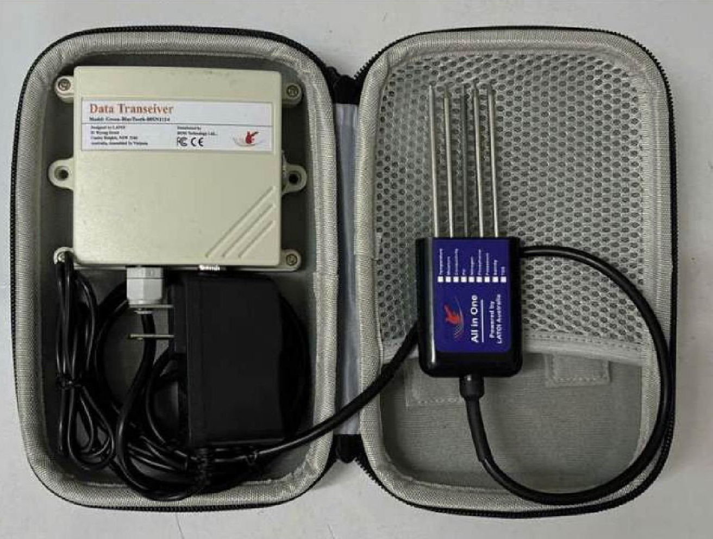
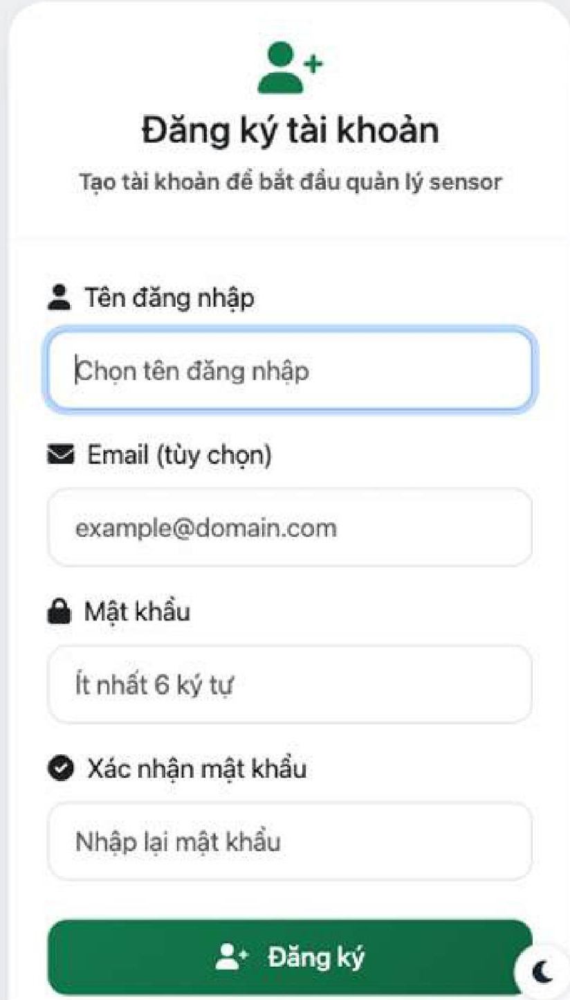
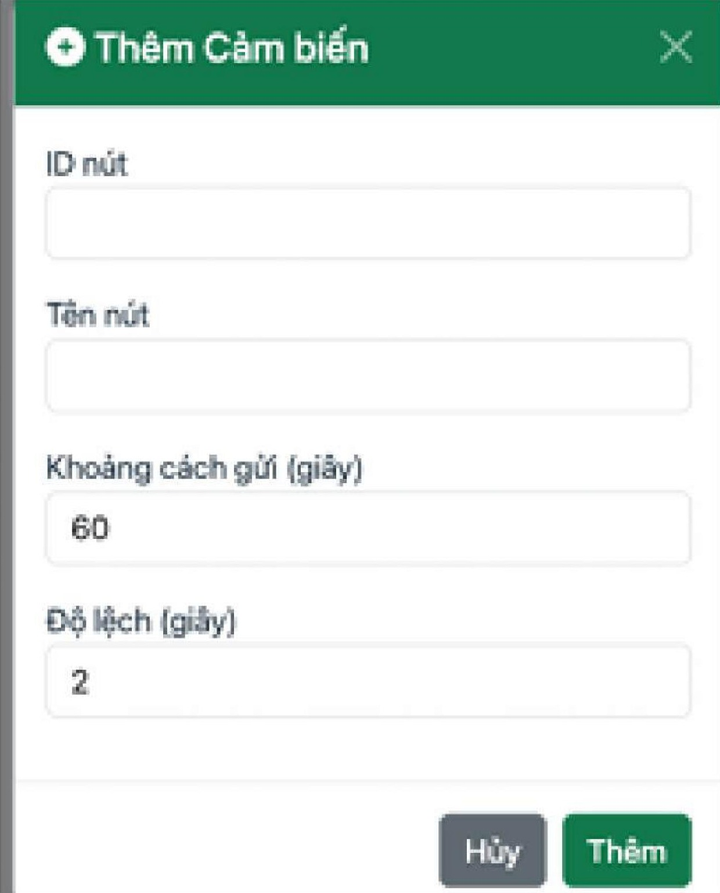
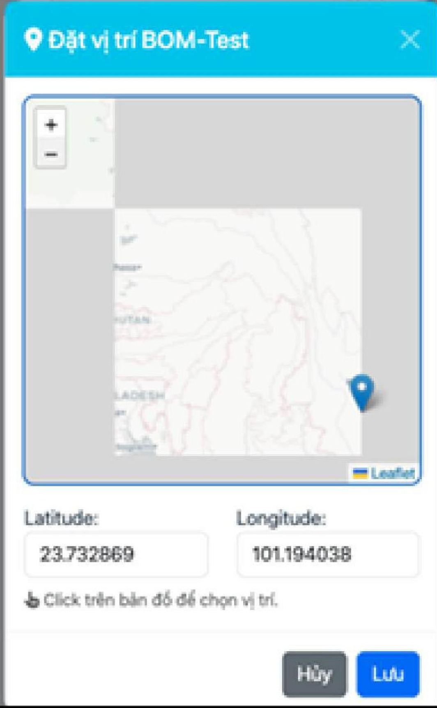
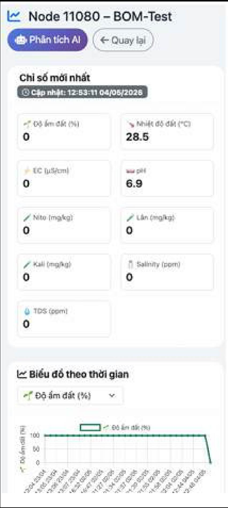
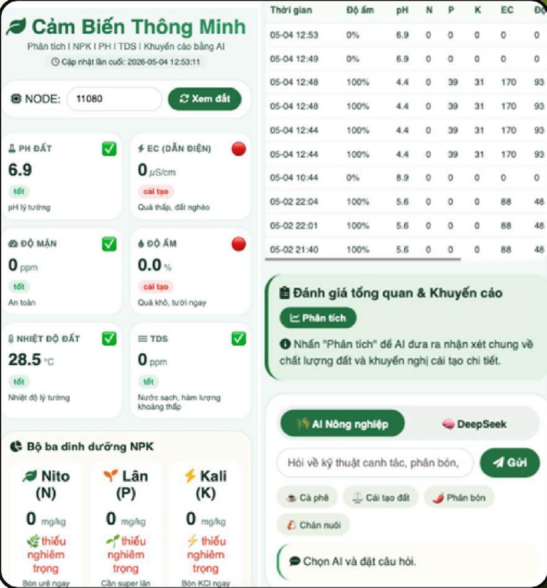

Bón phân, tưới nước
theo kinh nghiệm cảm tính?
theo kinh nghiệm cảm tính?
Hãy để dữ liệu chuẩn xác
dẫn đường cho nông trại.
dẫn đường cho nông trại.

LoRaWAN · 15 km
9 chỉ số / 5 giây
AI GreenDoctor
Blockchain
VIỆN STP · ĐỀ XUẤT GIẢI PHÁP
Giải pháp nông nghiệp thông minh
BOM IoT
Giải pháp giám sát chuẩn quốc tế, bảo chứng bởi chuyên gia ICT 25 năm kinh nghiệm.
CERTIFIED
PROFESSIONAL
PROFESSIONAL
By BOM Technology
thành viên LATOI Australia
thành viên LATOI Australia
UY TÍN QUỐC TẾ
Năng lực ICT chuyên sâu –
bảo chứng quốc tế.
bảo chứng quốc tế.
BOM IoT không chỉ là phần cứng, mà là tinh hoa trí tuệ từ các chuyên gia đạt chuẩn CP trong lĩnh vực ICT.
0+
Năm kinh nghiệm
trong lĩnh vực ICT
trong lĩnh vực ICT
Certified Professional (CP)
Cấp bởi Hiệp hội Máy tính Úc (ACS) – tiêu chuẩn cao nhất cho chuyên gia CNTT.
ICT Canada
Bảo chứng cho các thuật toán AI và bảo mật dữ liệu cấp quốc tế.
Hệ sinh thái LATOI Australia
Kế thừa nền tảng công nghệ nông nghiệp bền vững từ Australia.
Hai phiên bản thiết bị –
một nền tảng thông minh.
một nền tảng thông minh.
LoRaWAN
Hệ thống giám sát tầm xa
Phủ sóng 15 kmNăng lượng mặt trờiGiám sát 24/7

WiFi / BluetoothThiết bị cầm tay kiểm tra nhanh
9 chỉ số / 5 giâySạc USB Type-CXem trên điện thoại
3 km
15 km
GATEWAY
01HỆ THỐNG LORAWAN TẦM XA
Phủ sóng
lên đến 15 km.
lên đến 15 km.
Giám sát tập trung cho trang trại hàng trăm hecta và doanh trại lớn.
Truyền ổn định 3 – 15 km
Vượt qua mọi vật cản
Bất chấp địa hình
Đồi núi, thung lũng, trang trại hàng trăm hecta
Năng lượng mặt trời
Không cần kéo dây điện
100 node trên 1 màn hình
Quản lý tập trung, tiết kiệm nhân công
CƠ CHẾ HOẠT ĐỘNG
Từ hiện trường
đến điện thoại của bạn.
đến điện thoại của bạn.
01
Sensor Node
Đặt tại hiện trường, đo 9 chỉ số đất và môi trường
02
Gateway (bộ thu)
Đặt tại trung tâm, thu sóng LoRa từ node cách xa đến 15 km
03
Cloud Server
Lưu trữ dữ liệu tập trung, tính bảo mật cao
04
Web / App
Xem chỉ số và cảnh báo mọi lúc, mọi nơi
Tính bảo mật cao
Tự động 24/7 – không cần đo thủ công

Cảnh báo: độ ẩm đất thấp
Node #15083 · BOM-Lab-01 · vừa xong
QUẢN LÝ ĐA ĐIỂM
Kiểm soát toàn bộ
trên một màn hình.
trên một màn hình.
Xem vị trí từng node trên bản đồ vệ tinh
Cảnh báo tức thì qua smartphone khi chỉ số bất thường
Truy xuất lịch sử dữ liệu theo ngày / tháng / năm
Phân tích tương quan thời tiết và độ ẩm đất

02THIẾT BỊ CẦM TAY · WIFI / BLUETOOTH
Linh hoạt – Tức thì –
Hiệu quả.
Hiệu quả.
0
chỉ số
trong 1 thiết bị
trong 1 thiết bị
0giây
nhận kết quả
trên điện thoại
trên điện thoại
Tiết kiệm chi phí
Không cần hạ tầng mạng phức tạp, phù hợp vườn diện tích nhỏ
Kết nối siêu tốc
Qua WiFi hoặc Bluetooth, trả 9 chỉ số chỉ sau 5 giây
Tính di động cao
Gọn nhẹ, cầm tay kiểm tra bất kỳ điểm nào
Dễ dàng sạc
Cổng USB Type-C phổ biến, pin dung lượng cao
Sử dụng dễ dàng
ngay trên điện thoại.
ngay trên điện thoại.

1Đăng ký tài khoản miễn phí

2Thêm node cảm biến

3Đặt vị trí trên bản đồ

4Xem chỉ số & biểu đồ
CÔNG NGHỆ CẢM BIẾN
9 chỉ số –
trong một thiết bị.
trong một thiết bị.
9TRONG 1
Dinh dưỡng đấtNitơ (N) · Phốt pho (P) · Kali (K)
Tối ưu phân bón, phát hiện phân bón giả
Lý hóa đấtĐộ pH · Độ ẩm · Nhiệt độ đất
Duy trì môi trường lý tưởng cho rễ cây
Môi trườngĐộ dẫn điện (EC) · Độ mặn
Cảnh báo sớm xâm nhập mặn, ngộ độc muối
Chất lượng nướcTổng chất rắn hòa tan (TDS)
Kiểm soát độ sạch nguồn nước tưới
TRÍ TUỆ NHÂN TẠO
AI GreenDoctor –
“bộ não” nông nghiệp.
“bộ não” nông nghiệp.
Chẩn đoán sức khỏe cây trồng
Phát hiện sớm sâu bệnh và ngộ độc đất
Phát hiện phân bón giả
Theo dõi biến động N-P-K, cảnh báo phân kém chất lượng
Trợ lý AI 24/7
Giải đáp kỹ thuật canh tác, bón phân theo số liệu thực tế
Quản lý rủi ro thiên tai
Cảnh báo sớm khô hạn, sương muối, xâm nhập mặn

Trợ lý AI Nông nghiệp
Vườn tôi nên bón phân thế nào tuần này?
Dựa trên chỉ số N-P-K, pH và độ ẩm mới nhất tại vườn, đây là khuyến nghị bón phân phù hợp…
BLOCKCHAIN & BẢO MẬT DỮ LIỆU
Chống thao túng
dữ liệu sạch.
dữ liệu sạch.
0%
MINH BẠCH & TOÀN VẸN
BLOCK #1021
pH 6.8 · Ẩm 42%
0x9f3a…c21e
BLOCK #1022
N 32 · P 18 · K 41
0x51bd…7a09
BLOCK #1023
EC 1.2 · TDS 350
0xc7e2…18fd
BLOCK #1024
Nhiệt độ 28.5°C
0x2a90…e4b3
BLOCK #1025
Độ mặn 0.4‰
0x8d14…a6c2
Sổ cái không thể chỉnh sửa
Mọi chỉ số môi trường được ghi nhận vào Blockchain, bảo đảm tính pháp lý và tin cậy tuyệt đối.
Truy xuất nguồn gốc
Nền tảng cho việc truy xuất nguồn gốc (Traceability) và chống hàng giả.
Đạt chuẩn xuất khẩu
Giúp nông sản đạt chuẩn xuất khẩu sang Úc và Canada.
Giá trị kinh tế
vượt trội.
vượt trội.
+0%
Tăng năng suất
Chăm sóc theo dữ liệu chuẩn xác thay vì kinh nghiệm cảm tính
−0%
Giảm lãng phí phân bón
Bón đúng lượng, đúng lúc theo chỉ số N-P-K thực tế
−0%
Tiết kiệm nhân công
Dữ liệu tự động gửi về 24/7, không cần đo thủ công
*Dựa trên số liệu thực tế tại các trang trại đã triển khai hệ thống BOM IoT
SO SÁNH CÁC PHIÊN BẢN
Chọn phiên bản
phù hợp với nông trại.
phù hợp với nông trại.
PHIÊN BẢNLoRaWAN
PHIÊN BẢNWiFi / Bluetooth
Phạm vi kết nối
Tối đa 15 km (tầm xa)
Tối đa 50 m (cận biên)
Nguồn điện
Năng lượng mặt trời / dây cáp điện
Pin sạc USB Type-C
Mục đích sử dụng
Giám sát liên tục
Kiểm tra di động, tức thì
Cảnh báo AI
Tự động qua smartphone
Tự động qua smartphone
LỘ TRÌNH TRIỂN KHAI
Triển khai bài bản
qua 4 giai đoạn.
qua 4 giai đoạn.
GIAI ĐOẠN 1
Khảo sát & tư vấn
Khảo sát địa hình, tư vấn vị trí lắp đặt node
GIAI ĐOẠN 2
Gateway & Cloud
Thiết lập Gateway, kết nối hệ thống Cloud
GIAI ĐOẠN 3
AI & Blockchain
Kích hoạt phân tích AI, đồng bộ dữ liệu Blockchain
GIAI ĐOẠN 4
Bảo trì & tối ưu
Bảo trì, cập nhật thuật toán tối ưu năng suất

Quy mô toàn quốc – sẵn sàng hợp tác.
Trụ sở Hà NộiTòa nhà Diamond Flower, 48 Lê Văn Lương
Văn phòng Nha Trang (1)B19-03 KĐT An Bình Tân
Văn phòng Nha Trang (2)STH116-23 đường số 33, KĐT Lê Hồng Phong 1
Trung tâm Tuyển sinh TP.HCMSố 28, đường D9, KDC Carric

0827.695.368
0968.702.701
www.vienstp.com
viencongnghestp@gmail.com
Hợp tác cùng Viện STP – Đồng hành cùng phát triển bền vững!